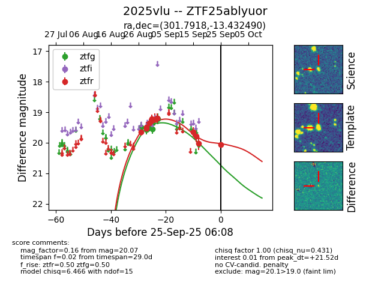
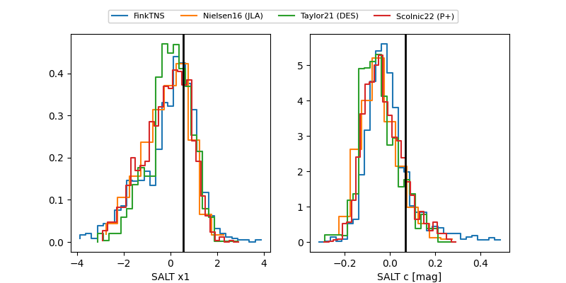

FINK: ZTF25ablyuor
Lasair: ZTF25ablyuor
ALeRCE: ZTF25ablyuor
TNS: 2025vlu
YSE: 2025vlu
ZTF25ablyuor (ztf,fink)
2025vlu (tns,yse)
equatorial (ra, dec) = (301.7918,-13.43249)
galactic (l, b) = (29.0241,-22.75447)


last ztfg=19.22, ztfr=20.07
7 ztfg, 13 ztfr detections